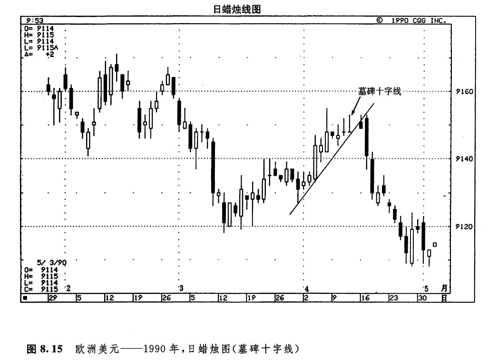
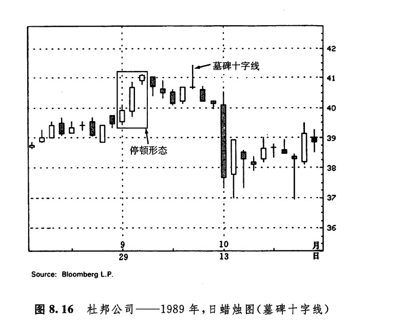

还有一种非常独特的十字蜡烛线，称为基碑十字线（也称灵位十字线）。在某根蜡烛线上，当开市价和收市价都位于当日的最低点时，就形成了一根基碑十字线。虽然我们有时也能够在市场底部发现这类蜡烛线，不过，这类形态最突出的长处还是在于昭示市场顶部方面。从基碑十字线的外形看，它的名称是颇为贴切的。我们曾经指出，日本技术分析的很多术语都建立在类似的军事术语之上，从这个意义上说，基碑十字线恰恰标志着在市场上为捍卫自己的阵地而战死的多头或者空头的墓地。
位于上涨行情之后的基碑十字线具有疲软的意义，其中的原由是很好理解的。在这根蜡烛线上，市场开市于当日的最低点。后来，市场开始上冲（在这个过程中，市场最好还能创出当前上升趋势的新高）。但是好景不长，价格直线下跌，重新回到了当日的最低点，多头的麻烦来了。该形态的上影线愈长、所处的价格水平愈高，那么，这根基碑十字线的技术意义就愈疲弱。
如图8.15所示，4月11日和12日是两根十字线，其中第二根十字线最引人注目。这是一根基碑十字线。在本实例中，这根墓碑十字线标志着熊方已经夺得了主动权，牛方的战争就此完事，随后，图示的上升趋势支撑线被向下突破（关于蜡烛图与趋势线的关系问题，我们在第十一章将要深入探讨）。在图8.16中，10月8日是一根基碑十字线（该蜡烛线的下影线极短，因此依然属于基碑十字线）。对于图示的股票市场来说，这根基碑十字线的技术意义特别疲软。当日，市场曾经向上触及了一个新高位。牛方本来可以乘此良机将价格推高，但是他们却失败了。到当日收市时，价格已经向下回落到了接近当日最低点的地方。在此处的41美元的水平上，市场过去也遇到过麻烦。从9月29日开始，连续出现了三根白色蜡烛线，形成了一个停顿形态。现在，这根基碑十字线再度证实，在41美元的水平上存在着大量的供给。


有些朋友或许已经注意到，墓碑十字线与流星形态颇为相像。发生在市场顶部的基碑十字线，实际上是流星形态的一种特殊情况。流星蜡烛线具有较小的实体，而墓碑十字线——作为一根十字线——甚至没有实体。基碑十字线比流星形态更为疲软。
下一篇：构成支撑水平和阻挡水平的十字线
上一篇：长腿十字线和黄包车夫